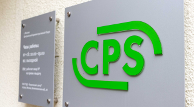

Мы являемся авторизованным сервисным центром по ремонту техники Dell. Только у нас вы можете отремонтировать свой ноутбук Dell с официальной гарантией производителя.
Мы успешно работаем с 1992 года и заслужили репутацию надежного партнера, что подтверждает большое количество постоянных клиентов. Мы гордимся тем, что к нам обращаются по рекомендациям и, в свою очередь, советуют нас родным и близким.
Читать дальше
Мы являемся авторизованным сервисным центром по ремонту техники Dell. Только у нас вы можете отремонтировать свой ноутбук Dell с официальной гарантией производителя. Мы успешно работаем с 1992 года и заслужили репутацию надежного партнера, что подтверждает большое количество постоянных клиентов. Мы гордимся тем, что к нам обращаются по рекомендациям и, в свою очередь, советуют нас родным и близким. Мы являемся авторизованным сервисным центром по ремонту техники Dell. Только у нас вы можете отремонтировать свой ноутбук Dell с официальной гарантией производителя. Мы успешно работаем с 1992 года и заслужили репутацию надежного партнера, что подтверждает большое количество постоянных клиентов. Мы гордимся тем, что к нам обращаются по рекомендациям и, в свою очередь, советуют нас родным и близким.
